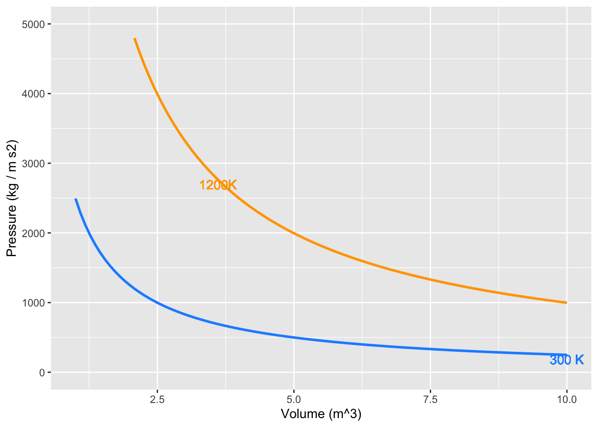

MOSAIC Week 15 Assignment
Accumulating Wind Power
linear algebra
Remember to hand in your work …
At any point, you can submit your answers by collecting them and uploading them to the class site.
No answers yet collected
If the answers that have been loaded automatically are not yours, press this button before starting your work:
Chapter 35
Remember our conventions for notation:
- Fixed quantities (perhaps with units)
- Symbols: e.g. \(a\), \(b\), \(c\), \(x_0\), \(t^{\star}\)
- Examples: 3.2, 4.8 meters, 17 feet/sec\(^2\)
- Names of inputs to functions
- Symbols: e.g. \(x\), \(t\), \(y\), \(u\), \(v\)
- Examples: position, time, velocity
- Functions of an input
- Symbols: e.g. \(f(x)\), \(g(t)\), \(h(x, t)\)
- Examples: position as a function of time, density as a function of position
- Functions evaluated at a specific numerical input
- Symbols: e.g. \(f(a)\), \(g(t_0)\), \(h(x^{\star}, t^{\star})\)
- Examples: velocity at the finish line, starting position
In particular, take care to distinguish between these two kinds of symbolic items:
- \(f(x)\), which means \(f()\) as a function of \(x\)
- \(f(x_0)\), which means the function \(f()\) evaluated at the specific input \(x_0\), producing a quantity (e.g., 3.5 meters/sec.)
A major source of confusion for students is that \(a\) is a constant, even though we are not yet saying specifically which numerical value that constant has. Think of \(a\) as meaning “insert constant here.” In terms of derivatives …
- \(\partial_x f(a) = 0\)
- \(\partial_x f(x)\) is a function
- \(\partial_u f(x) = 0\), since \(u\) and \(x\) are different input names.
- \(\partial_u f(u)\) is a function, the exact same function as in (ii).
Exercise 1 With this in mind, turn to our three perspectives on a definite integral \[\large \int_{\color{brown}{a}}^{\color{brown}{b}} {\color{blue}{f(x)}}\, dx = {\color{magenta}{F(x)}}\left.{\LARGE\strut}\right|_{\color{brown}{a}}^{\color{brown}{b}} = {\color{magenta}{F}({\color{brown}{b}})} -{\color{magenta}{F}({\color{brown}{a}})}\]
- \(\color{brown}{a}\) and \(\color{brown}{b}\) are numerical constants
- \(\color{blue}{f}(x)\) and \(\color{magenta}{F}(x)\) are functions of \(x\)
- \(\color{magenta}{F}(\color{brown}{a})\) is the function \(\color{magenta}{F}()\) evaluated at the specific input \(\color{brown}{a}\), producing a quantity. Likewise \(\color{magenta}{F}(\color{brown}{b})\).
- What kind of a thing is \(F(u)\), according to our notation convention? (Hint: First figure out what kind of thing is \(u\), according to the notation conventions.)
first-fundamental-theorem-1
- What kind of a thing is \(F(a)\), according to our notation convention?
first-fundamental-theorem-2
- What kind of a thing is \(F(u) - F(a)\), according to our notation convention?
first-fundamental-theorem-3
- According to our notation convention, what kind of a thing is \[\int_a^u f(x) dx \text{?}\]
first-fundamental-theorem-4
- According to our notation convention, what kind of a thing is \[\int_u^b f(x) dx \text{?}\]
first-fundamental-theorem-5
- According to our notation convention, what kind of a thing is \[\int_u^x f(x) dx \text{?}\]
first-fundamental-theorem-6
Now turn to the entities involved in the so-called “First Fundamental Theorem of Calculus.” (“Fundamental theorem” is a highfalutin way of saying something like, “This isn’t obvious at first glance, and so you should be especially careful to memorize it so that you identify it when you see it.” Another way to state it is, “Every function is the derivative of some anti-derivative.” But you knew that already, since “every function has an anti-derivative.”)
Here are the entities involved, which you will recognize as a slight modification of an earlier statement:
\[\partial_u \int_a^u f(x)dx \ \ =\ \ \partial_u \left. F(x) \right|_a^u \ \ = \ \ \partial_u \left(F(u) - F(a)\right) .\] Let’s look at the right-most expression \(\partial_u \left(F(u) + F(a)\right)\) and exploit the the derivative of a sum is the sum of the derivatives. So … \[\partial_u \left(F(u) + F(a)\right) = \partial_u F(u) - \partial_u F(a) = \partial_u F(u)\]
- Which of the following correctly justifies the step \[\partial_u F(u) - \partial_u F(a) = \partial_u F(u)\ \text{?}\]
first-fundamental-theorem-7
Taking the left-most and right-most expressions in the above equation, we have \[\partial_u \int_a^u f(x) dx = \partial_u F(u)\]
- Is there an algebraic simplification of \(\partial_u F(u)\)?
first-fundamental-theorem-8
The equation \[\partial_u \int_a^u f(x) dx \ \ = \ \ f(u)\] means that “differentiation undoes integration” or, as we’ve been putting it, “differentiation undoes anti-differentiation.”
Exercise 3 (A simple heat engine) In the 1660s, John Boyle made use of then-new instrumentation to measure gas pressure. He discovered what’s now called Boyle’s Law, which says that, at constant temperature in a closed system, pressure times volume is a constant:
\[PV = const\] In the 1720s, Daniel Fahrenheit developed the first reliable thermometer consisting of a column of mercury in a glass straw. He developed a temperature scale which divided the range from freezing to boiling into 180 small units, which he called “degrees,” as was traditional in measuring angles. (In 1742, Anders Celsius created another scale with freezing at 0 and 100 small units—still called “degrees”—between freezing and boiling.
With the availability of reliable thermometers, scientists started to consider the role of temperature in the relationship between pressure and volume. Their many discoveries were eventually synthesized into a “combined gas law” and then into an “ideal gas law” which famously states: \[PV = nRT .\] Here, \(n\) is “amount” of gas, quantified as the number of moles of the gas in the container, \(T\) is temperature, and \(R\) is the “ideal gas constant”: \[R = 8.314 \text{J}/(\text{K}\ \text{mol})\] The “mol” cancels out the dimension of \(n\), the \(K\) cancels out the dimension of \(T\), leaving us with \(PV\) having the dimension of energy (Joules). The temperature \(T\) is measured in degrees Kelvin, which is just like Celsius but moving the location of 0 from freezing to … Well … the hypothetical temperature when \(PV=0\), which can be estimated by extrapolating measurements of \(PV(T)\) (that is, \(PV\) as a function of \(T\)) to the \(T\) where \(PV = 0\).
- It is convenient to have specific units in mind for pressure and volume. Since \(P V\) gives energy, let’s arrange \(P\) and \(V\) to have units such that when multiplied the result is Joules. What is the expression of the dimension Joule in terms of the SI system, that is, time in seconds, length in meters, and mass in kg? Hint: use the above paragraph and knowing that the units for energy are consistent for potential, kinetic, or other types of energy.
PV-units1
- In the SI units system, volume has units of cubic meters: \(m^3\). What are the SI units for pressure in terms of kg, m, and s? The units of your answer to this question times the units for pressure should be equivilent to your answer from the previous question.
PV_units2
For use in calculus, it is helpful to re-write the Ideal Gas Law in functional form. There are several ways to do this. For instance, if we wanted to measure the number of moles of gas in a container, we could use the function \(n(P, V, T) = PV/RT\). Here, we will focus on pressure as a function of the other quantities: \[P(n, V, T) = nRT/V.\] Now consider a very simple machine consisting of a cylinder, closed on one end and sealed by a movable piston at the other, as in this picture.

The machine in the picture is more complicated than the simple machine we want to model. The picture includes two small valves at the top of the cylinder connected each to a pipe.
Our machine has no valves and no pipes. The cylinder is charged with gas when it is manufactured. After that, nothing material goes in or out of the closed cylinder/piston system.
When you push on the cylinder, the volume available for the gas gets smaller and the pressure increases. When you let the cylinder push on you, the volume available gets bigger and the pressure decreases. The amount of gas, \(n\), never changes. For simplicity, we will imagine that \(n=1\) and that the gas is N\(_2\). This means the mass of the gas is 0.028 kg.
And, to simplify even more, let’s insist that the temperature of the cylinder and its gaseous content does not change from room temperature: 293\(^\circ\) Kelvin.

If you start in a high-volume, low-pressure state and push the piston to move to a low-volume, high-pressure state at the same temperature, you will be putting energy into the machine.
The “area” of each little box in the graph, that is, pressure times volume,
- How much energy (in Joules) corresponds to one small rectangle of area in the graph?
PV3
- By counting rectangles in the graph, estimate how much energy needs to be put into the machine when the volume changes from 7.5 m\(^3\) to 2.5 m\(^3\) at a temperature of 300 K?
PV4
Now that you have compressed the gas in the cylinder, by doing work on it, let’s heat up the machine to 1200K.
- What will be the pressure of the gas when the volume of the machine is 2.5 m\(^3\) at temperature 1200 K? (The units will be kg m$^{-1} \(s^{-2}\))
PV5
- Starting with the machine at 1200K and a volume of 2.5 m\(^3\), how much energy will the machine transfer to you when it expands to 7.5 m\(^3\)? Estimate this by counting squares in the graph.
PV6
The net work done by the machine in completing the cycle, shifting from compression at low temperature to expansion at high temperature, is the difference between the energy put out by the machine when expanding and the energy put into the machine to compress the gas. Such a machine is called a “heat engine” since it turns a source of high temperature and a source of low temperature into energy.
Evaluate the code in Listing 1. The first line defines a function \(P(V, T)\) with default \(n=1\) mole of gas. Anti-differentiate \(P()\) with respect to \(V\) then calculate the energy needed to compress the cylinder at the low temperature, that is \[\int_{7.5}^{2.5} P(V, T=300) dV .\] Call this numerical result compress_energy.
Similarly, calculate the energy done by the machine in the high-temperature expansion \[\int_{2.5}^{7.5} P(V, T=1200) dV .\] Call this numerical result expand_energy.
You may want to make a graph of your \(P(V, T)\) function to check that it is right. Also, check that the integrals are right by comparing them to the rough estimate you made earlier by counting squares.
Exer 15.3
Exercise 2 A function windspeed(t) is being provided to you. It records wind speed at the site of a wind-turbine farm over one day, that is, \(0 \leq t \leq 24\) hours. The function speed2power(s) is the production function for the brand of wind turbine used at the farm: the input is speed in miles per hour, the output is in kilowatts. (Both these functions were created for this exercise. They are not about a real turbine at a real wind farm, but are somewhat realistic.) Hint: you can nest a function inside of another function.
Use the following chunk to graph the functions windspeed() and speed2power() over a sensible domain.
Your task is to find the total energy generated over the 24-hour period by the turbine. Reminder: energy \(E\) is electric power multiplied by time. Or, more usefully for this problem, the increment energy \(dE\) generated at time \(t\) is the product of power at time \(t\) multiplied by the increment of time \(dt\), that is, \(dE = p(t) dt\). Consequently, \[E = \int_\text{morning}^\text{night} p(t) dt\] where “morning” should really be 00:00 h and night 24:00 h on the day in question.
We don’t have an algebraic formula for windspeed(t) even though it is a function. You can use antiD() to find the anti-derivative of the electric power function.
The answer you compute should be saved to the name result. The units will be in kWh – kilowatt hours.
The energy function in the above chunk takes time as an input and produces as output the total energy generated up to that time. But when was the starting time? It was not specified!
At first, this might seem like nonsense: What’s the point of knowing the total energy up to time \(t\) if you don’t know when was the beginning of the accounting period.
- Explain what about the second line of the chunk effectively lets you define the start of the accounting period.
- Wind turbines of this type have a maximum power rating. You should be able to determine the max rating by examining a graph of
speed_to_power(). Was this rating exceeded at any point during the day?
wind-power-1
- At the maximum power rating, what’s the theoretical maximum amount of energy produced by the turbine over a 24-hour day?
wind-power-2
- About what fraction of the theoretical maximum energy did the wind turbine generate over the 24-hour period?
wind-power-3
- A peak time for residential energy consumption is from 7 am to 9 am. The price at which you, the energy producer, can sell electrical energy to the grid operator is, say, $0.09 per kilowatt-hour. At that price, how much would the energy produced from 7-9 am be worth?
wind-power-4
- What’s the average wind speed over the 24-hour period?
wind-power-5
- Wind speed fluctuates a lot, but imagine that the wind blew steadily at the average wind speed from the previous problem. How much energy would be generated over the 24-hour period?
wind-power-6
Exercise 4 As you know, \[\int_a^c f(x) dx = \int_a^b f(x) dx + \int_b^c f(x) dx\\ \text{and}\\\int_a^c f(x) dx = - \int_c^a f(x) dx\ .\]
Here are some definite integrals for which, without stating anything more about the function, we give you the numerical result.
| \(\int_{2}^{7} f(x) \,dx = -8\) | \(\int_{-6}^{-2} g(x) \,dx = 3\) |
| \(\int_{2}^{12} f(x) \,dx = -14\) | \(\int_{0}^{2} g(x) \,dx = 1\) |
| \(\int_{2}^{7} h(x) \,dx = 5\) | \(\int_{0}^{2} h(x) \,dx = 6\) |
Consider these the facts you have to work with when answering the following questions:
- \(\int_{2}^{7} 3f(x) \,dx =\)?
calf-know-painting-1
- \(\int_{7}^{12} f(x) \,dx =\)?
calf-know-painting-2
- \(\int_{2}^{7} f(x) + g(x) \,dx =\)?
calf-know-painting-3
- \(\int_{2}^{2} r(x) \,dx =\)?
calf-know-painting-4
- \(\int_{-6}^{-2} \left[\strut g(x)+3\right] \,dx =\)?
calf-know-painting-5
- \(\int_{12}^{7} f(x) \,dx =\)
calf-know-painting-6
Exercise 5 Equation 1 shows three items, all of which are equivalent even though they look different. You can see this from the equal signs separating the three items.
\[\large \int_{\color{brown}{a}}^{\color{brown}{b}} {\color{blue}{f(x)}}\, dx = {\color{magenta}{F(x)}}\left.{\LARGE\strut}\right|_{\color{brown}{a}}^{\color{brown}{b}} = {\color{magenta}{F}({\color{brown}{b}})} -{\color{magenta}{F}({\color{brown}{a}})} \tag{1}\]
When you reach the point where you can say, “That’s obvious,” and can write down the three items from memory, you will have achieved an important facility with calculus.
- Since the three items are equivalent, they are all the same kind of “thing.” What kind of thing are they?
three-perspectives-1
The equation has been written in color to help you identify elements that are the same in each of the three items.
- Which of the colors stands for a bound of integration?
three-perspectives-2
- Which of the colors stands for the derivative of a function that appears elsewhere in the equation?
three-perspectives-3
- Which of the colors stands for an anti-derivative of a function that appears elsewhere in the equation?
three-perspectives-4
Exercise 6 The (so-called) “First Fundamental Theorem of Calculus” says:
\[\partial_t \int_a^t f(x) dx \ = \ f(t)\]
Consider this new quantity: \[\partial_t \int_t^a f(x) dx\] Which of the following is a valid simplification of the quantity?
u-on-the-bottom-1
Explanation
\(\partial_t \int_a^t f(x) dx\) is equivalent to \(\equiv F(t) - F(a)\), where \(F()\) is the anti-derivative of \(f()\).
Consequently, \[\partial_t \int_t^a f(x) dx \ \equiv F(a) - F(t) = -\left[F(t) - F(a)\right]\].
..id..
Exercise 7 Which of the following is NOT equivalent to \[\int_1^4\frac{1}{x}dx\ ?\]
ape-lie-coat-1
Exercise 8 The KC-46 is an airborne fuel tanker that can receive or dispense fuel. Suppose \(x(t)\) tracks a KC-46’s fuel transfer rate, in pounds per minute, where \(t\) is measured in minutes from the start of the mission. Note that \(0 < x(t)\) when the KC-46 is receiving fuel from another tanker and \(x(t)<0\) when the KC-46 is offloading fuel to a supported aircraft.
The function \(b(t)\) tracks the KC-46’s fuel burn rate, also measured in pounds per minute, with the same interpretation of \(t\). Note that \(b(t)\) can never be negative (i.e. \(0 \leq b(t)\))
- Which of the following is the proper representation of the KC-46’s fuel state \(m\) minutes after mission start?
buck-forgive-canoe-1
- What is the meaning of \[\int_0^{120} x(t)dt=40,000\ ?\] Keep in mind that there are 60 minutes in 1 hour, so 120 minutes is 2 hours.
buck-forgive-canoe-2
Exercise 9 Look at Figure 35.1 in MOSAIC Calculus
Notice that the zero-crossings of \(f()\) each are an argmax or argmin of the anti-derivative \(F()\). Explain why.
Answer
If we have a function \(F(t)\) and want to find the argmaxes or argmins, a procedure is to differentiate \(\partial_t F(t)\) and look for the zero crossings. If \(F()\) is the anti-derivative of \(f()\), then \(f()\) must be the derivative of \(F()\).
..id..
)